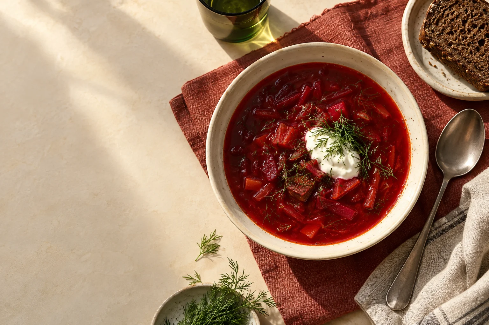
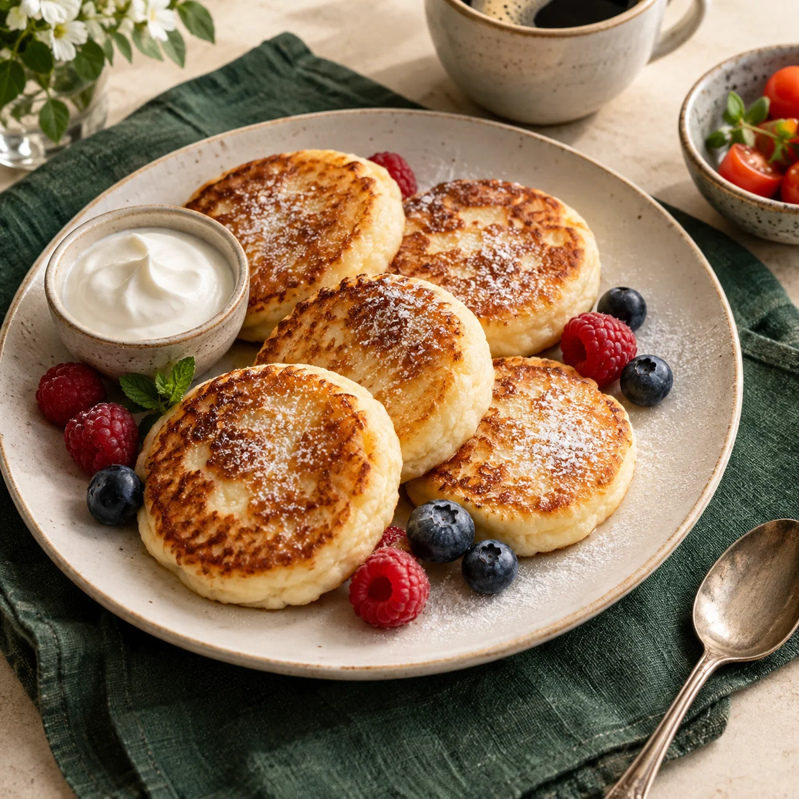
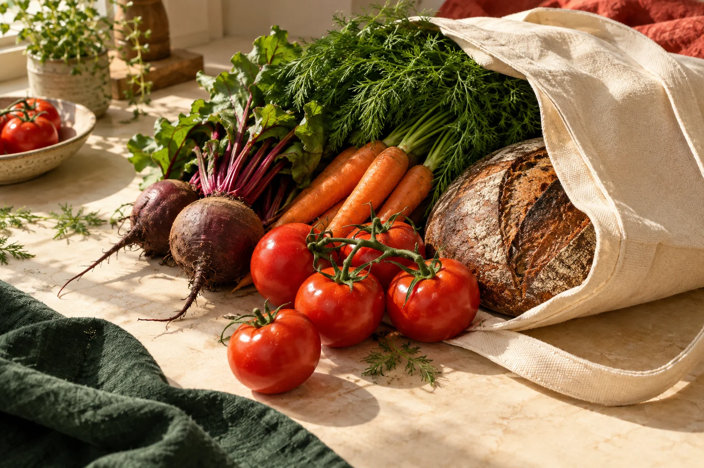

Aaгрецький салат, 300 г
📷сніданок
🎤0:04
Запис їжі трьома способами
Текст, фото або голос → чернетка КБЖВ → підтвердити, виправити або скасувати. Корекція — словами, без меню.
PlateLoop · твій помічник у Telegram · beta
PlateLoop — щоденник їжі, улюблені рецепти й покупки в одному чаті. Надішли фото або скажи, що з’їв. Перевір приблизну оцінку калорій — і продовжуй свій день.

Як це працює
Записати їжу — швидше, ніж відкрити нотатки. Бот робить чернетку, ти кажеш «так».
Звичайною фразою, фотографією тарілки або голосовим на ходу. Бот розбере продукти й порції та покаже чернетку з приблизною КБЖВ.
🍽 Чернетка страви
борщ — 400 г · 320 ккал
хліб — 40 г · 100 ккал
Або поправ словами: «там ще сметана», «не 300, а 200 грамів». Нічого не стає фактом, поки ти не підтвердив.
📅 Сьогодні
Сума, залишок до цілей, історія. Страва з плану повертається в щоденник як нова чернетка — знову один тап.

Їжа — це частина життя
Сирники на вихідних. Борщ на два дні. Твій звичний обід. PlateLoop допомагає тримати все разом: що з’їв, що приготуєш і що треба купити.
Можливості
Записав → запланував → купив → з’їв. Кожен крок живе в тому самому чаті. Лише те, що вже працює в боті.
Текст, фото або голос → чернетка КБЖВ → підтвердити, виправити або скасувати. Корекція — словами, без меню.
Скільки з’їдено, скільки лишилось. Прогрес — як залишок, не як вирок. Цілі задаєш сам або рахуєш норму в боті.
📖 Чернетка рецепта (ще не збережено)
Сирники зі сметаною
▸ Інгредієнти (5)
▸ Кроки (4)
Вставте текст рецепта звідки завгодно або надішліть фото — бот зробить чернетку, яку можна правити словами.
Розклад зі збережених рецептів — не з чужого меню. Хочеш іншу страву — вибери інший свій рецепт.
Збирається з підтвердженого плану. Відмічаєш у магазині, копіюєш як текст.
Забрати або стерти все можна прямо в боті, без окремого кабінету та листів у підтримку.
Бот відповідає мовою твого Telegram. Картки, кнопки й підказки — обома мовами.
Всередині бота
Нічого не вигадано: так виглядають лог, день, план і покупки в боті сьогодні.
борщ + хліб
🍽 Чернетка страви (ще не записано)
• борщ — 400 г · 320 ккал
• хліб житній — 40 г · 100 ккал
Разом: 420 ккал · Б 18 / Ж 14 / В 52
Якщо підтвердити · залишок 1 580 ккал
📅 Сьогодні (1 вер)
сніданок · Сирники · 380 ккал
обід · Борщ + хліб · 420 ккал
перекус · Яблуко · 80 ккал
Разом: 880 ккал · Б 44 / Ж 30 / В 112
🗓 План харчування · 7 днів від 1 вер (чернетка)
День 1:
• Сніданок: Сирники · ⏱ 25 хв
• Обід: Борщ · ⏱ 90 хв
• Вечеря: Гречка з грибами · ⏱ 30 хв
День 2:
• Сніданок: Овсянка · ⏱ 10 хв
• Обід: Плов · ⏱ 60 хв
• Вечеря: Салат з тунцем · ⏱ 15 хв
План складено зі збережених рецептів без AI-планування.
🛒 Список покупок
Принципи
Три правила, за якими зроблено кожен крок у чаті.
Бот ніколи не змінює дані мовчки. Розпізнав — показав чернетку. Зрозумів правку — показав «було → стане». Підтвердження — один тап.
Після кожної дії — максимум одна підказка: «Зберегти як рецепт?», «Зібрати список покупок?». Не меню і не список можливостей.
Часовий пояс, цілі, звичні страви — бот питає один раз. «Як завжди» повторює твій останній підтверджений запис.
Чесно
Краще сказати одразу, ніж розчарувати згодом.

Питання
Не знайшов відповіді — у боті є кнопка «💬 Фідбек». Пиши, що плутає або чого не вистачає.
Ні. PlateLoop працює в Telegram, який у тебе вже є. Відкрив бота — і можна писати.
Приблизна. Саме тому бот показує чернетку, а не записує одразу: ти бачиш продукти, порції й цифри — і правиш словами, якщо щось не так.
Ні. Бот не лікар і не AI-дієтолог. КБЖВ — орієнтир, а не призначення.
Зараз closed beta без публічного прайса. Доступ — через бота в Telegram.
Українською та англійською.
Кілька логів їжі, один тижневий план зі своїми рецептами і короткий фідбек: що зламалось або чого не вистачає.
Closed beta
Почни з одного повідомлення. А рецепти, план і покупки підхопиш у своєму темпі.
Відкрити PlateLoop у TelegramОцінка КБЖВ приблизна · не медична порада